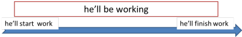

Three more future forms (+ 1)

Before we begin
If you haven't followed the guide to four future forms yet (or not for some time) you are advised to look at it before you read on.
This guide explains three tenses often taught to higher-level
learners which are slightly less common ways to talk about particular
aspects of the future. If you are unsure about the distinction
between aspect and tense,
there's a guide on this
site.
The other distinction to make sure you are clear about is the difference
between stative and dynamic uses of verbs. If you
are unsure, there's a
guide on this site.
This guide also includes an explanation of a fourth common way to talk
about the future which is rarely taught but easy to teach and learn:
We are about to begin the guide.
 |
the future progressive |
There are three uses:
- the future as 'a matter of course' 1
The sentence
He'll be working when you come
implies that the action will be happening in the natural course of things and your arrival will interrupt it. The form doesn't always denote a progressive action but it usually does. The best way to explain this is probably with the use of a time line such as
 - the future as 'a matter of course' 2
The second example
I'll be starting work at 7
does not imply a progressive action but the implication is that the action will be happening in the course of things and will mean that you are unavailable for other appointments. It can also imply that this is a new arrangement rather than a one-off event so in that respect, it is progressive and similar to the first example. - tact and diplomacy
the form is often used to sound tentative and polite. Compare:
The left-hand examples can sound peremptory and even rude but the use of the progressive form softens the nature of the question and makes it sound much more polite.Will you come at 6? Will you be coming at 6? When will she install the new software? When will she be installing the new software?
This is somewhat subtle so you'll need to set the context and role relationships clearly if you are teaching the use. It does, however, follow a general rule that more complex forms often imply more distance or politeness.
 |
the future perfect |
Task 2: Make a note of what you understand the three different but closely connected uses of this tense are. Click here when you have done that.
| He'll have finished the book by the time I want it |
| He'll have repaired the car and then we can use it |
| I'll have been at the hotel for a day or two before I can call you |
- Use 1: He'll have finished the book by the time I want it
- The tense is used to make it clear that
one event or state precedes another. As with the past
perfect-past simple distinction, it is not always necessary to use the tense
forms like this if the ordering is clear. For example, it would be
equally clear if one said
He'll finish the book and then he'll let me have it. - Use 2: He'll have repaired the car and then we can use it
- This is clearly similar to Use 1 in the sense of ordering the
activities but the distinction is that one event or action
depends on another. We
can't use the car until it is repaired and the
speaker makes this clear by the use of the perfect form. It is not
dissimilar to the use of the present perfect in, e.g.
When he has repaired the car, we can use it
except that the present perfect implies that he is working on the car now. The future perfect can show that but it isn't necessary. - Use 3: I'll have been at the hotel for a day or two before I can call you
- Another similar use to the first example but the speaker's implication here is a state will be in being before a subsequent event occurs. This use is confined to verbs which do not normally occur in the progressive aspect like, be, have, like, understand etc. See the guide to stative and dynamic verb uses for more.
|
|
the future perfect progressive |
Bear in mind that this form can only be used with verbs used in dynamic senses so is not normally available for verbs such as be, have, think, live etc. except where those verbs have dynamic senses. See the guide to stative and dynamic verb uses for more.
Task 3: Again, can you work out what the two uses are (they are closely connected to the uses of the future perfect simple)? Click here when you have an answer.
| I will have been working for over two hours before you get here |
| He'll have been travelling for ten hours and will be tired |
- Use 1: I will have been working for over two hours before you get here
- The tense is also used to make it clear that
one event or state precedes another.
The difference is simply that the speaker wishes to
emphasise the duration of the action.
Compare, e.g.
I'll have been at work for over two hours before you get here
This is similar to Use 3 in the last list. The speaker is making it clear that a progressive action (rather than a state of affairs like being in a hotel) will occur over an extended period before a subsequent (quick) event occurs. It also implies that the progressive action may continue after the second event occurs. - Use 2: He'll have been travelling for ten hours and will be tired
- This is clearly similar to Use 2 in the last list because one action or state causes or is dependent on the previous one. Again, however, the speaker wishes to emphasise the duration of the action.
 |
time lines |
As with many tense forms, the simplest way to present and help people to understand is via the use of clear time lines. Here are some examples for future perfect forms.


 |
be about to |
This is the form used for imminent or nearly imminent futures. Unlike many forms, it carries no speaker perceptions other than
- it is going to happen very soon (The bomb's about to go off)
- it is almost certain to occur (I'm about to leave, I'm afraid, so I can't talk now)
The form carries no implications of, e.g., speaker intention (see a.) and does not denote futures based on present evidence (see b.). The form is very simple to teach and learn and more common than you may think. (Other forms such as be bound to, be certain to, be liable to, be likely to etc. do carry modal meanings expressing the speaker's point of view (certainty, characteristic behaviour, likelihood etc.)
| Related guides | |
| four future forms | which considers the simpler tense forms |
| aspect and tense | to disentangle the concepts |
| stative vs. dynamic | to disentangle two more concepts |
| using time lines | for some more ideas |
| tenses | for a guide to all the tense areas of English |